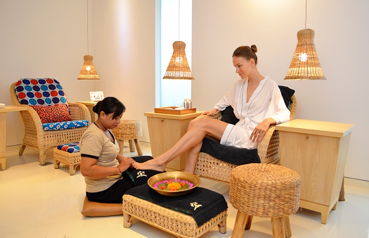
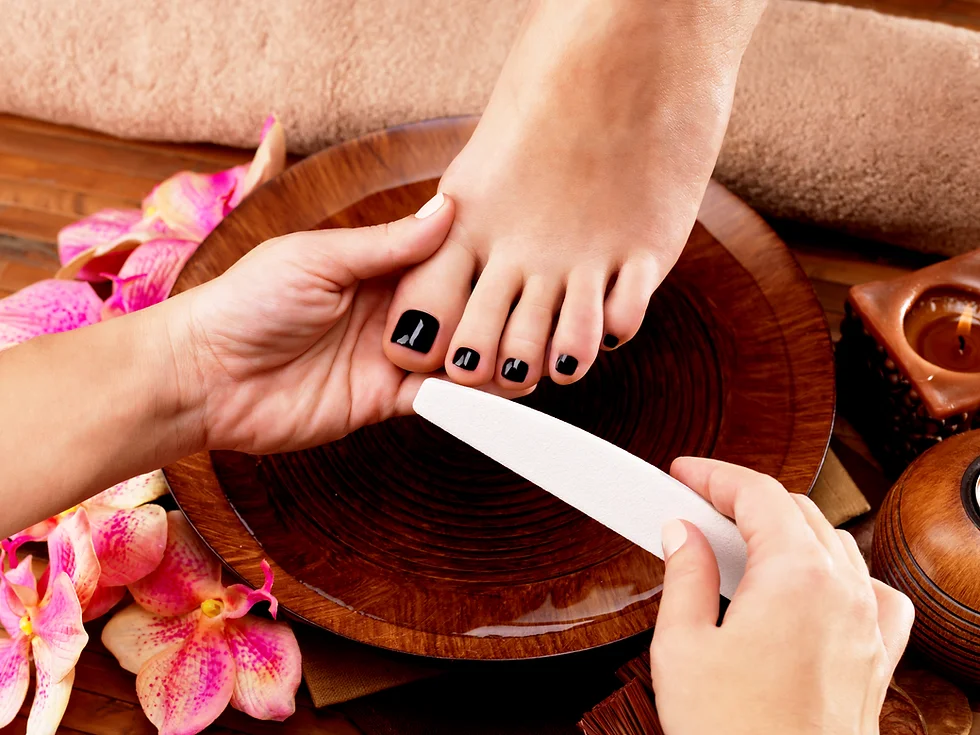
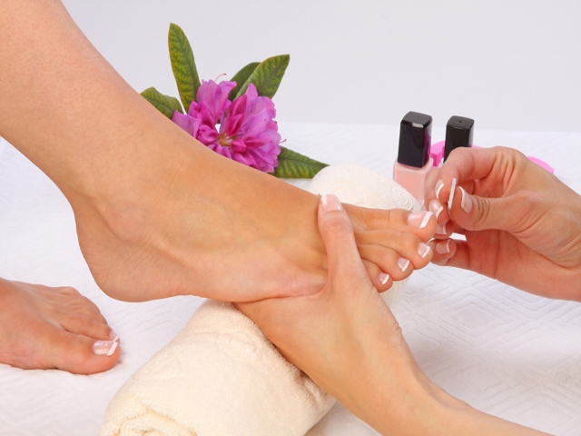
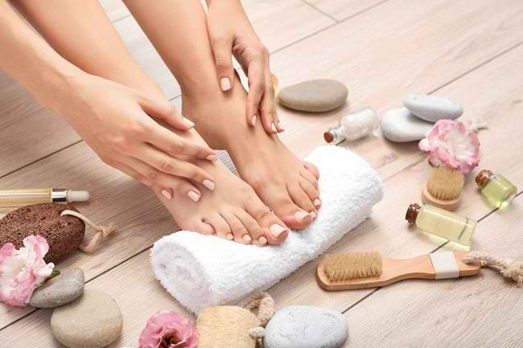

(45 Min)
Perawatan dasar untuk kuku tangan yang meliputi pembersihan, pemotongan, dan pemolesan untuk kuku yang bersih dan rapi.
(60 Min)
Perawatan dasar untuk kuku kaki dengan pembersihan, pemotongan, dan pemolesan agar kuku tampak bersih dan sehat.
(60 Min)
Manicure menggunakan gel khusus yang tahan lama, memberikan hasil kilap yang indah dan tahan lama hingga beberapa minggu.
(75 Min)
Pedicure dengan gel tahan lama yang membuat kuku kaki tampak cantik dan berkilau, serta tahan lama.
(60 Min)
Manicure lengkap dengan tambahan scrub dan pelembab untuk tangan yang lebih halus dan terawat.
(75 Min)
Pedicure lengkap yang dilengkapi dengan scrub dan pelembab untuk kaki yang lembut dan segar.
(50 Min)
Manicure gaya klasik dengan ujung kuku berwarna putih, memberikan kesan elegan dan bersih pada kuku Anda.
(65 Min)
Pedicure klasik dengan ujung kuku kaki berwarna putih, memberikan tampilan yang elegan dan bersih.
Classic Manicure (45 Min): Rp150,000
Classic Pedicure (60 Min): Rp180,000
Gel Manicure (60 Min): Rp250,000
Gel Pedicure (75 Min): Rp300,000
Spa Manicure (60 Min): Rp200,000
Spa Pedicure (75 Min): Rp250,000
French Manicure (50 Min): Rp180,000
French Pedicure (65 Min): Rp220,000



